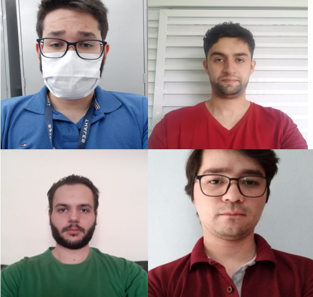
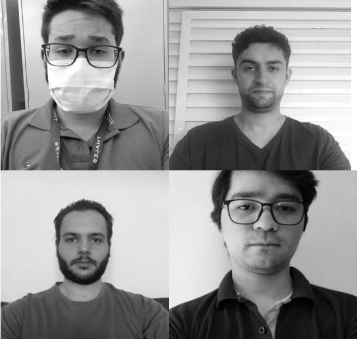
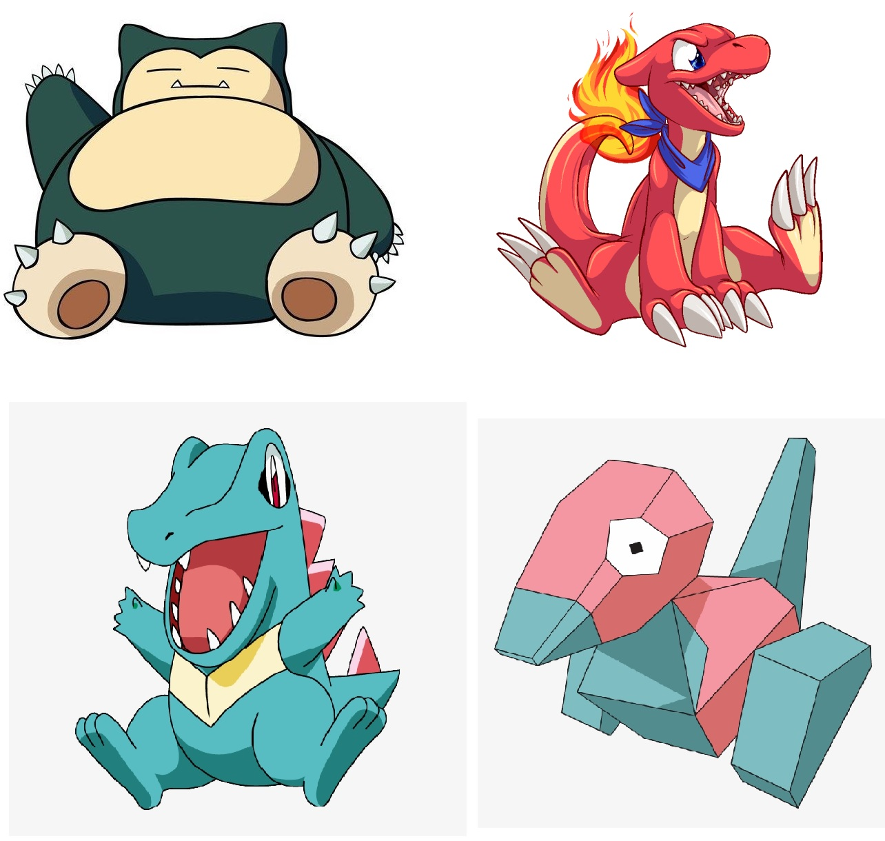
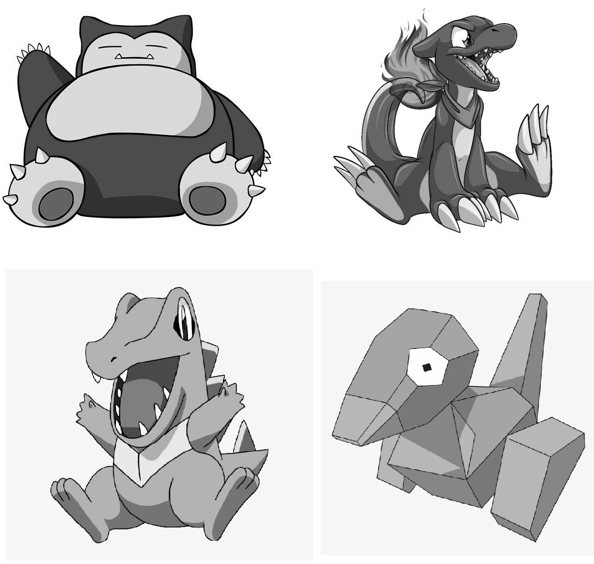
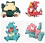

Procedimentos
Nesta prática, foram feitas alterações simples em imagens e vídeos utilizando a linguagem Python na ferramenta Google Colab. São apresentadas as fotos dos quatro integrantes do grupo e seus avatares, uma versão em tons de cinza dessa foto, e versões com 5% e o dobro de resolução.
Também são mostrados dois vídeos: um com movimentos rápidos e outro com movimentos lentos. São feitas modificações nas resoluções desses vídeos, produzindo versões com 50% e 25% da resolução dos vídeos originais.
Tudo isto foi feito utilizando as bibliotecas Matplotlib, Numpy e OpenCV.
Link para o Google Colab
Resultados
Imagens originais x preto e branco dos membros do grupo
Original
Preto e branco
Imagens com resoluções alteradas dos membros do grupo
5% de resolução
Original
Dobro de resolução
Imagens originais x preto e branco dos avatares dos membros do grupo
A seguir são mostrados os mesmos efeitos, mas feitos com nossos avatares
Original
Preto e branco
Imagens com resoluções alteradas dos avatares dos membros do grupo
5% de resolução
Original
Dobro de resolução
Vídeos lentos e rápidos com diferentes resoluções
Vídeos originais
Por algum motivo, os vídeos em resolução menor não aparecem no player. Eles estão disponibilizados nos links: